Attention is worthless if nothing converts it.
A growth strategist and an AI developer, building the system that brings people in and the AI that answers, books and follows up. Selected work below.
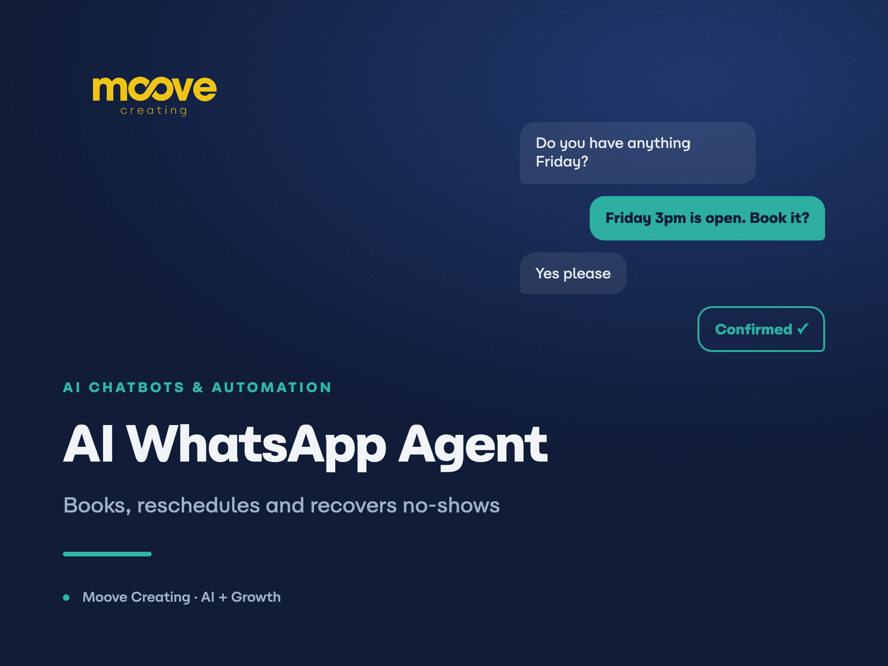
AI WhatsApp Agent that Books, Reschedules and Recovers No-Shows
Service businesses were losing customers in the gap between message and reply. Bookings were handled by hand, every message that a…
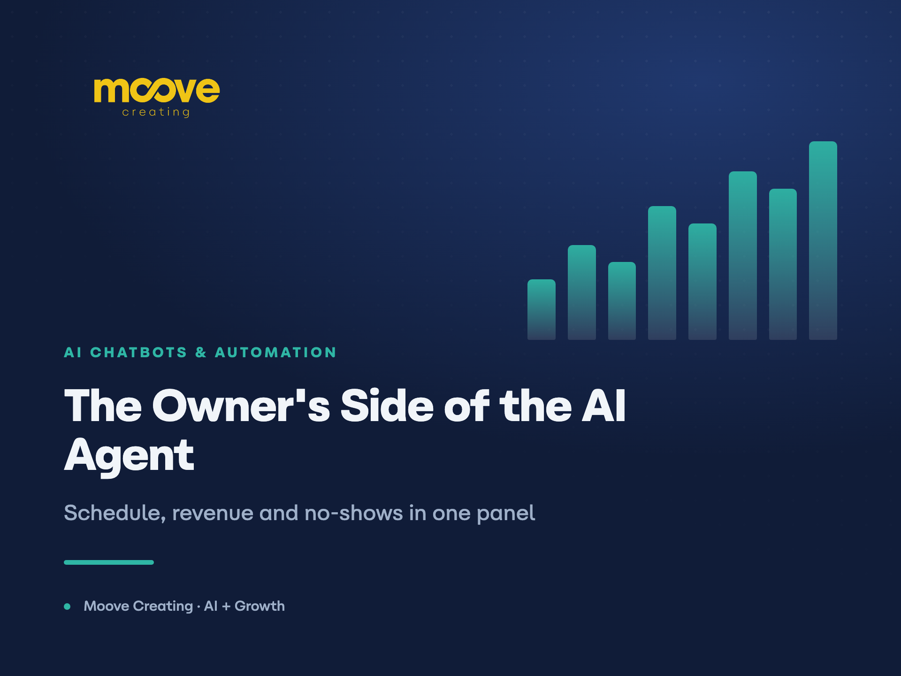
AI Attendant for Clinics: Answers Treatment Questions, Quotes and Fills the Schedule
Clinics get the same questions all day: what a treatment involves, how much it costs, whether there is an opening this week. Every…
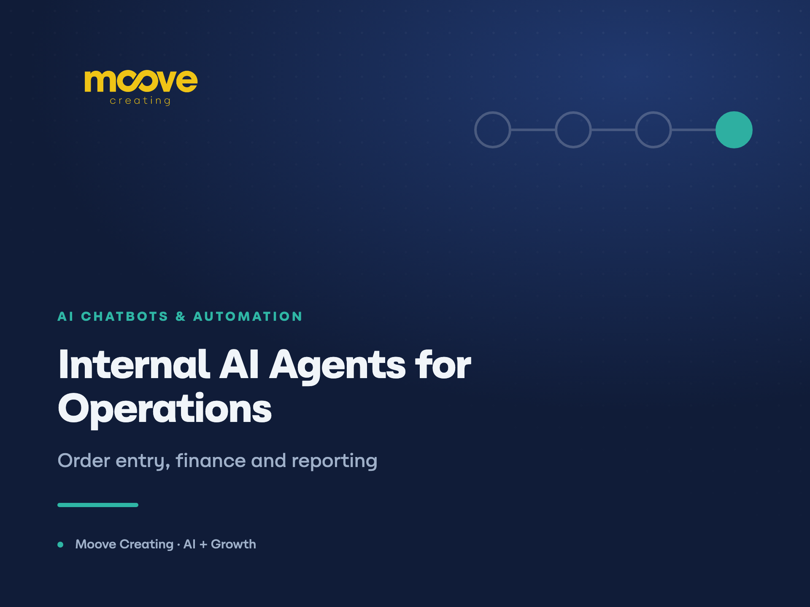
Internal AI Agents that Run Order Entry, Finance and Reporting
A food business was running order registration, financial control and operational reporting by hand, spread across disconnected to…
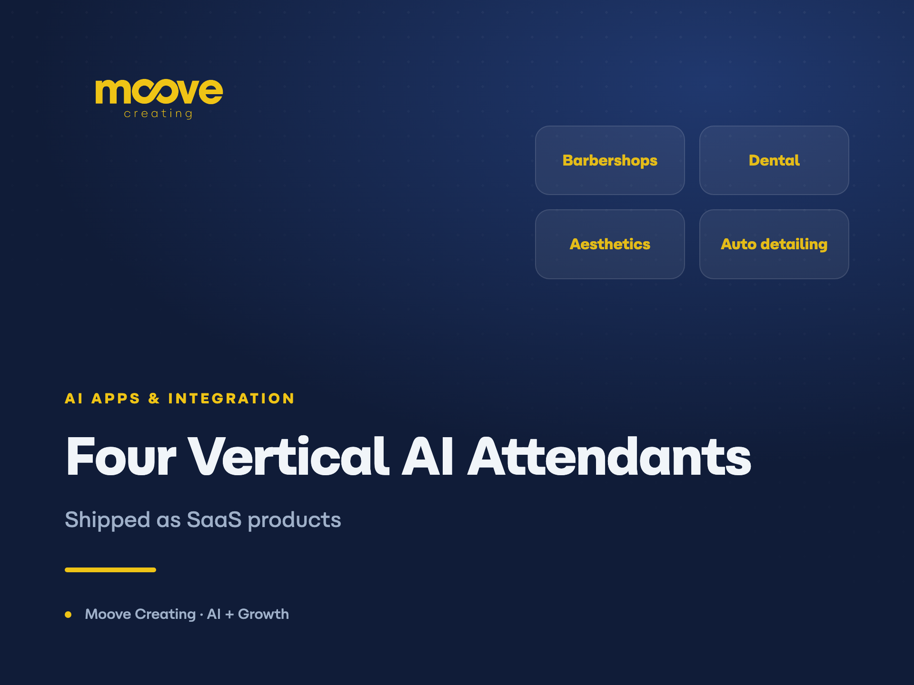
Four Vertical AI Attendants Built as SaaS Products
Small service businesses lose money the same way regardless of the trade: slow replies, manual scheduling and no follow-up. Barber…
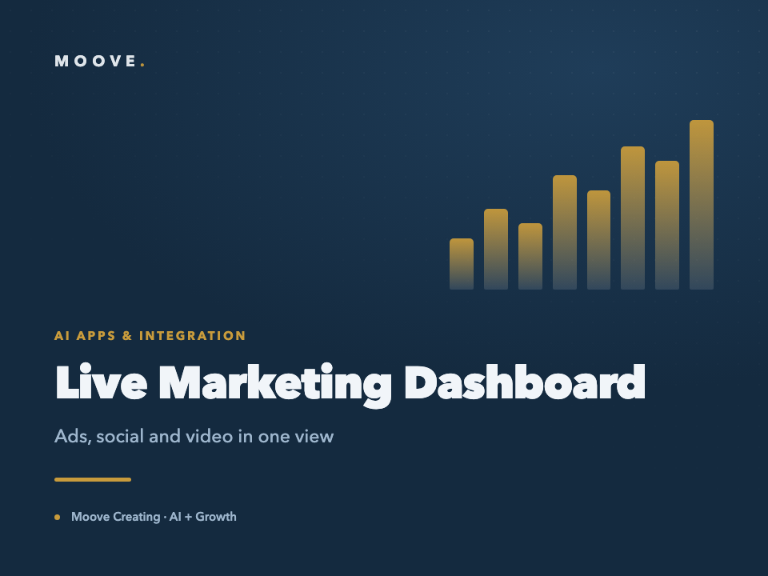
Automated Live Marketing Dashboard Across Ads, Social and Video
An education brand was reading its performance across Meta Ads, Instagram, Facebook and YouTube by hand, in four different places,…
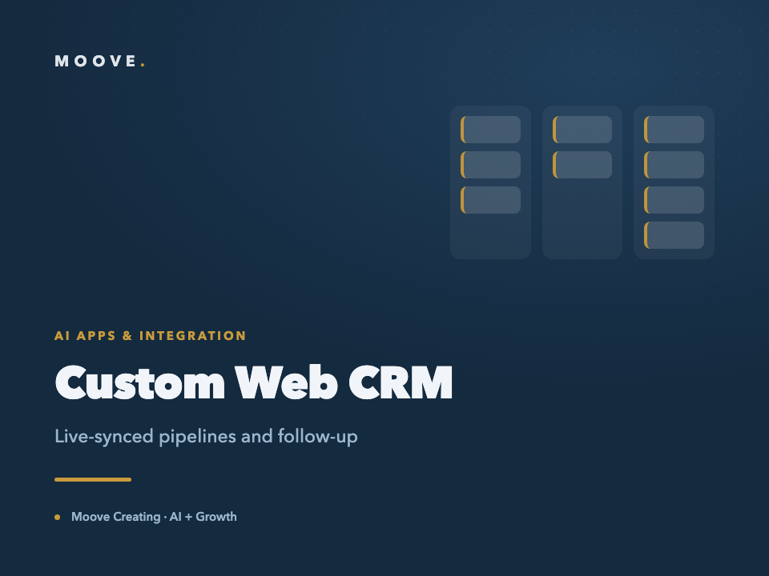
Custom Web CRM with Live-Synced Pipelines and Automated Follow-Up
Leads lived in scattered notes and spreadsheets. Two people were working the same pipeline from different devices with different v…
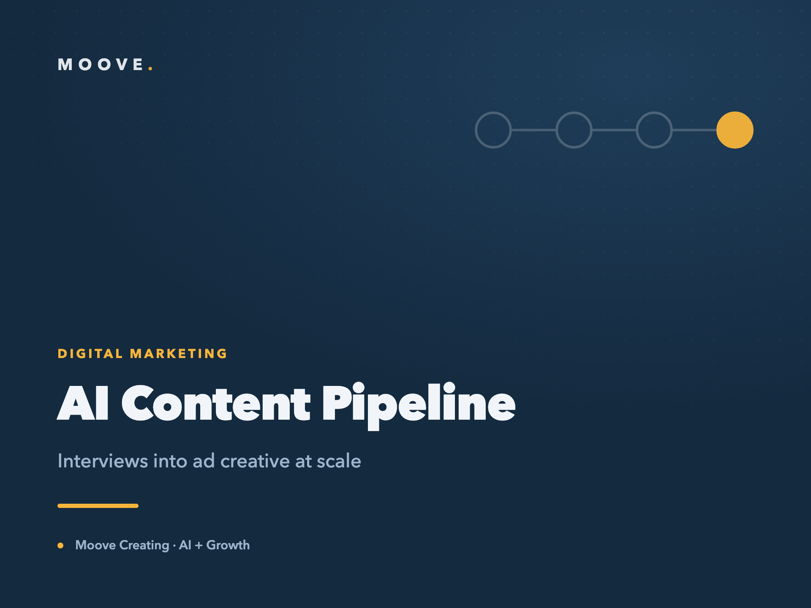
AI Content Pipeline: Turning Interviews into Ad Creative at Scale
A brand had hours of raw interview footage and no efficient way to turn it into advertising. Finding the moments worth using meant…
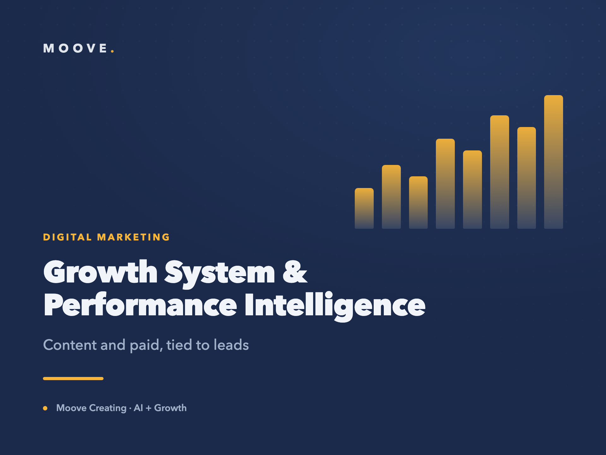
Growth System & Performance Intelligence for a B2B Brand
A B2B brand was producing content and spending on ads without a system tying either back to results. Effort was scattered across c…

Building Medical Authority: 100M+ Reach for a Doctor Creator
A doctor with real expertise had no meaningful digital presence, and the obvious path to reach in health content is the one that c…
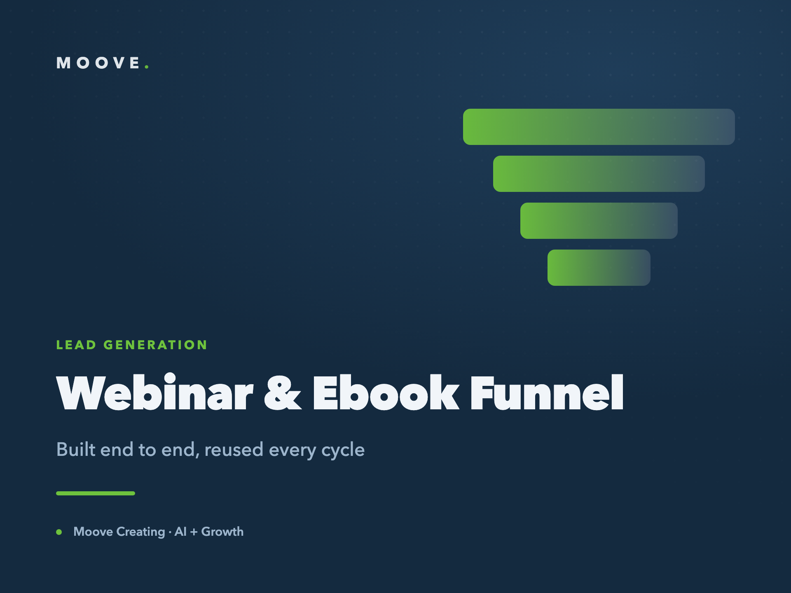
End-to-End Webinar & Ebook Funnel for a Real Estate Educator
A real estate educator had an engaged audience but no repeatable way to turn attention into registrations and program sales. Every…
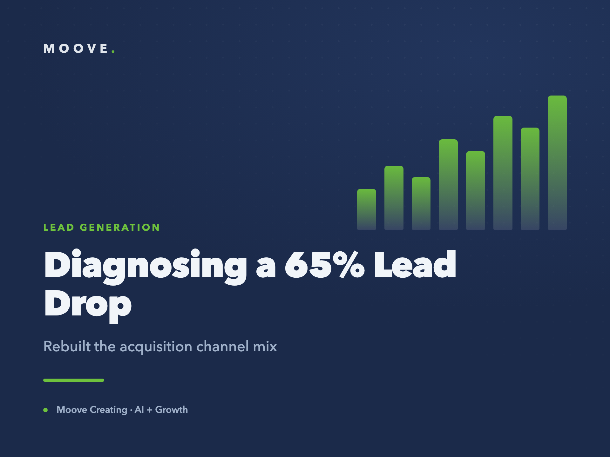
Diagnosing a 65% Lead Drop and Rebuilding the Acquisition Channel Mix
Monthly leads fell sharply and nobody could explain why. Spend was still going out the door, the pipeline was not filling, and the…
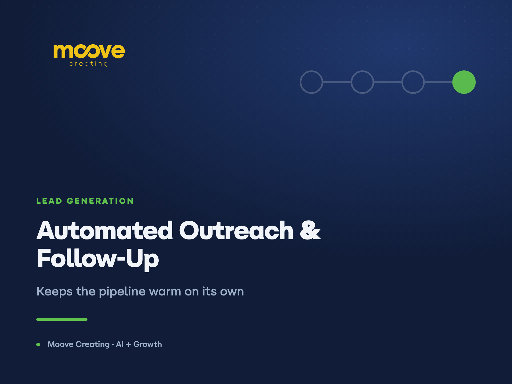
Automated Outreach and Follow-Up that Keeps a Pipeline Warm
Outbound was going out in bursts and dying in silence. First contact happened, follow-up depended on somebody remembering, and any…